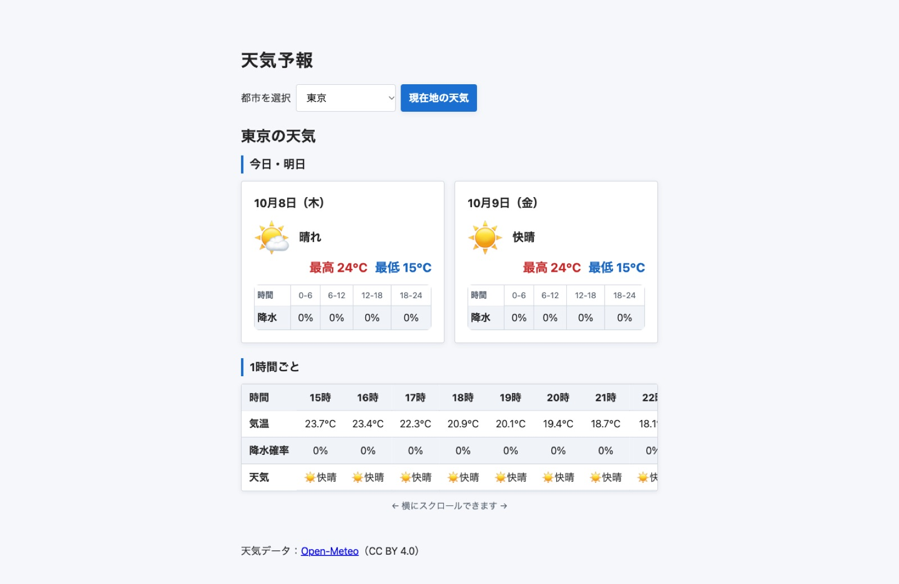

天気予報アプリ

作品概要
Open-Meteo APIを使用した天気予報アプリです。都市を選ぶと、今日・明日の天気（最高・最低気温、6時間ごとの降水確率）と、現在時刻から24時間先までの1時間ごとの天気を表示します。位置情報を使って現在地の天気を表示することもでき、読み込み中やエラー時にはメッセージを表示します。
JavaScriptの工夫
実装はすべてClaude Codeを活用して制作しました。生成されたコードは一つひとつ仕組みを確認し、理解したうえで反映しています。天気の取得はfetchとasync/awaitで書き、レスポンスのokを確認して失敗時はエラーを投げ、「読み込み中」「取得失敗」の表示に切り替えています。ブラウザの位置情報取得はコールバック形式のため、new Promiseで包んでawaitで扱えるようにし、許可されなかった場合は都市の選択を促すメッセージを出しています。ファイルは役割ごとにESモジュールで分け、どこで問題が起きたか追いやすく、変更が1か所で済む構成にしました。
アクセシビリティ
表の見出しにはscopeを付けて見出しとデータを結びつけ、画面上は見えないcaptionで表の内容を伝えています。天気の絵文字は読み上げが冗長にならないようaria-hiddenにし、天気名はテキストで表示しています。表示の切り替わりはaria-liveで読み上げソフトにも伝わるようにし、横スクロールする表はキーボードだけで操作でき、Lighthouseのアクセシビリティスコアは100です。
制作時間
13時間
使用技術
HTML、SCSS、JavaScript（フレームワークなし）、Open-Meteo API、Claude Code